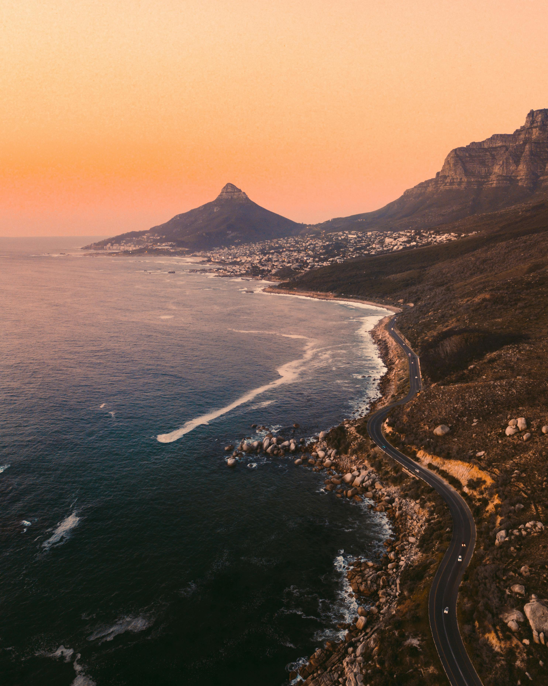
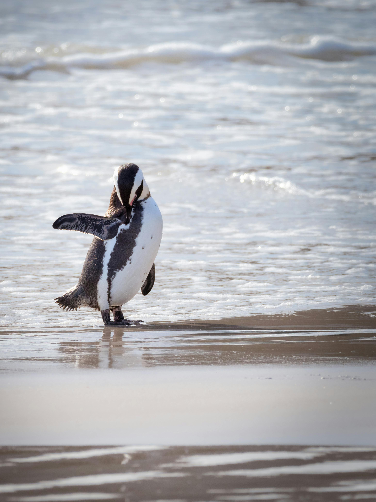
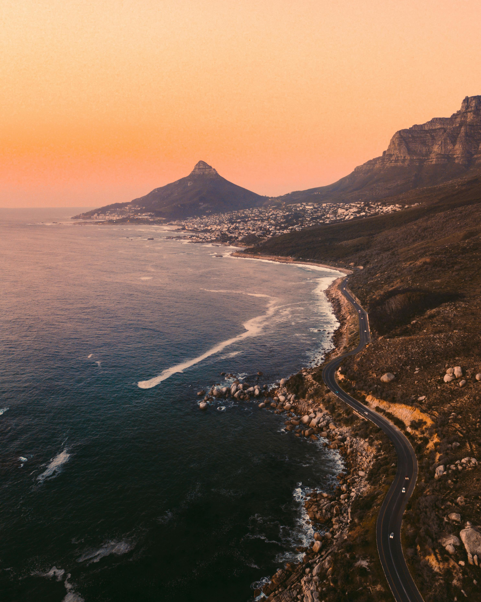
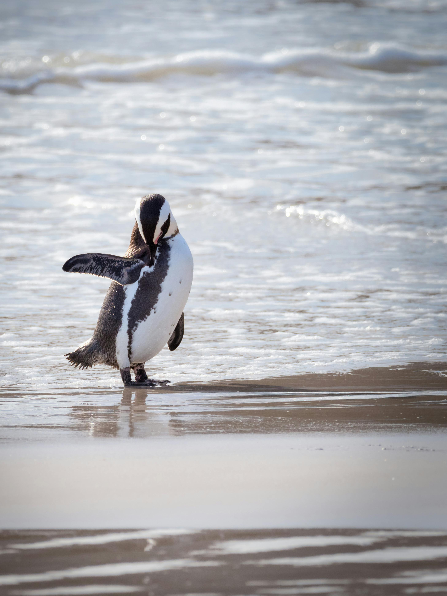
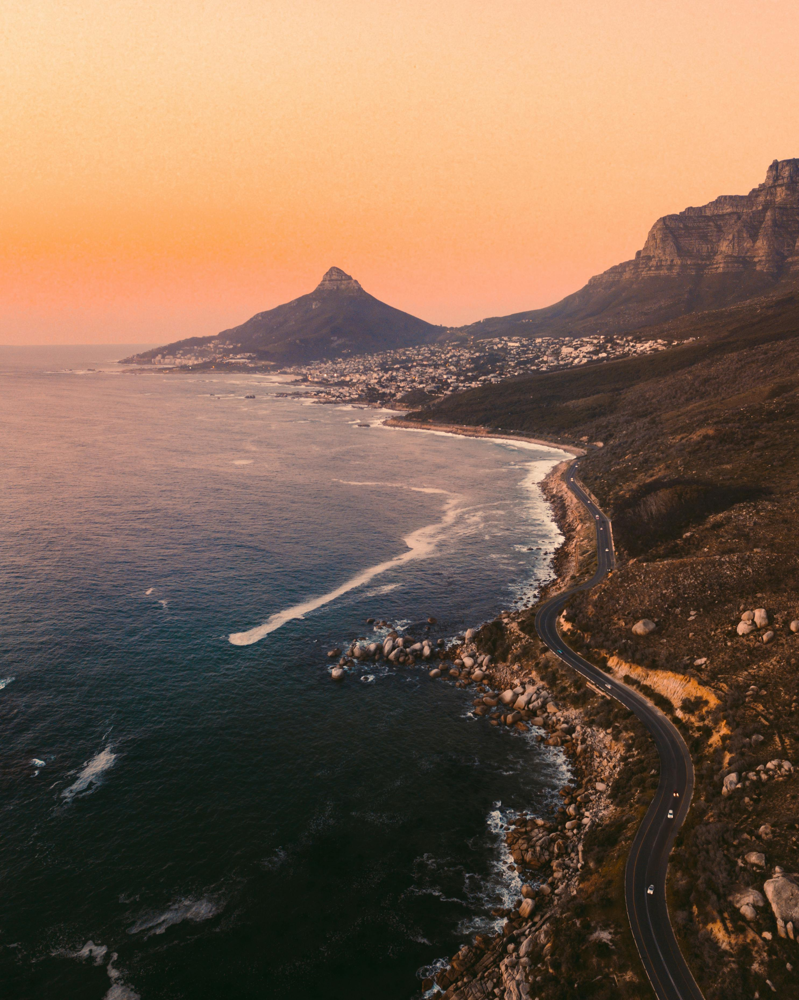
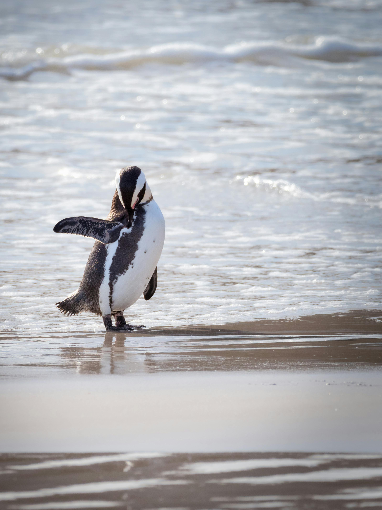

A África do Sul é um país vibrante e cheio de contrastes, onde natureza selvagem, diversidade cultural e história
se encontram para criar uma experiência de viagem única. Conhecida por suas paisagens incríveis, que vão desde
savanas, desertos e montanhas até praias espetaculares, é o destino ideal para quem busca aventura, contato com
a natureza e aprendizado cultural.
Cidades como Cidade do Cabo, Joanesburgo e Durban oferecem infraestrutura moderna, vida urbana agitada e acesso
a atrações naturais impressionantes. Um dos maiores atrativos do país são os safáris, especialmente no Parque
Nacional Kruger, onde é possível ver de perto os famosos “Big Five”: leão, elefante, búfalo, leopardo e
rinoceronte.
Além das belezas naturais, a África do Sul tem uma história marcante de superação, simbolizada por líderes como
Nelson Mandela. A diversidade de línguas, tradições e sabores transforma cada região em uma nova descoberta.
Visitar a África do Sul é se surpreender com paisagens deslumbrantes, pessoas acolhedoras e uma energia que
contagia.

